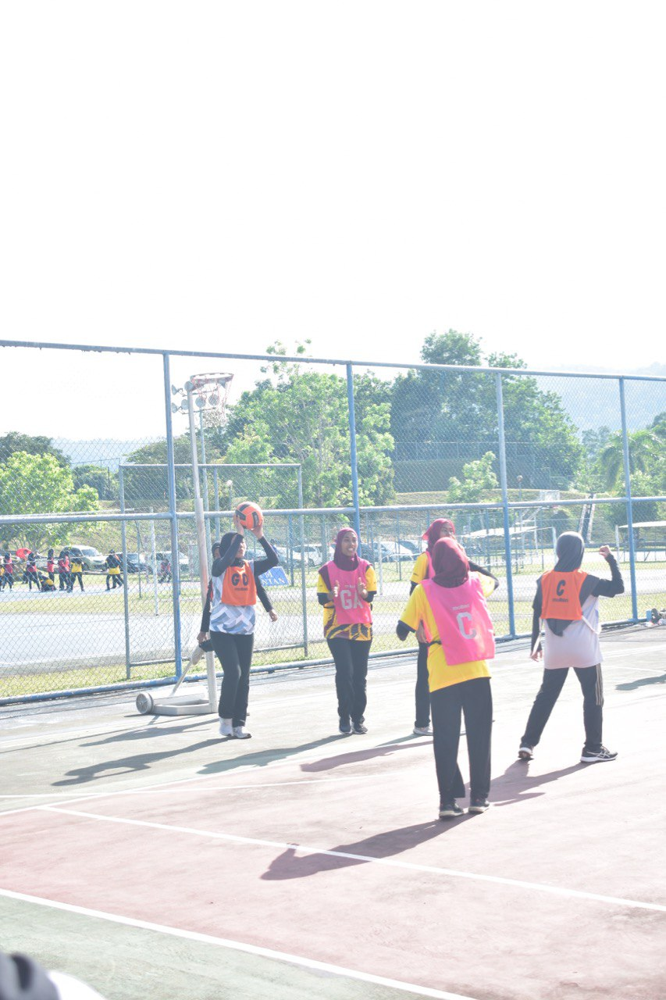
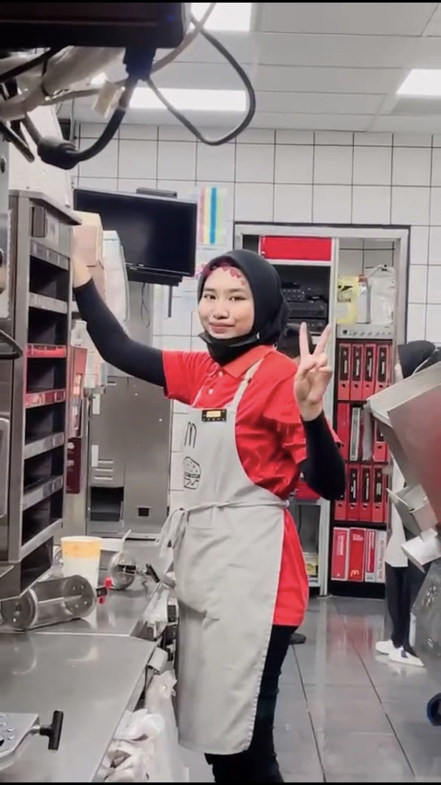

Faten Syahira's living her own life

When I Was in School,
I started getting involved in the world of netball since primary school as early as 10 years old. Starting with the exercises I was playful but my teacher started to unearth my hidden talent. I play as a defender in the GD or GK position. I started representing the school at the age of 11. While in high school I represented the school from the age of 14 until the end of school. In addition to representing the school, I also represent the district at the state level and represent the state at the national level.

After I Finised School,
After finishing SPM, I started working at McDonald's Bertam DT which is close to my house. I started working on December 5, 2019. I also work part-time even though there are online classes. In the morning I will study in the online class as usual. After the end of class in the evening, I will work for 8 hours until 12 am. After returning from work, I will complete an assignment or do some revision until 3 am and sleep. During my time working there, I have learned many things as a human being and understand the variety of customers. The experience of working for 3 years has made me a resilient person.
.png)